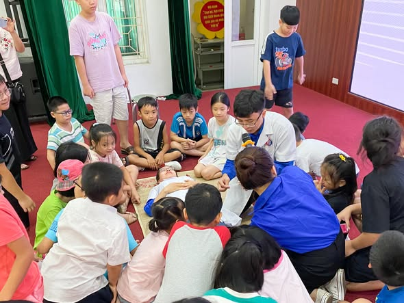

Mỗi mùa hè, trẻ em đều có thêm thời gian để vui chơi, khám phá và trải nghiệm những điều mới mẻ. Nhưng bên cạnh những niềm vui ấy cũng luôn tiềm ẩn nguy cơ tai nạn thương tích trong sinh hoạt hằng ngày. Chính vì vậy, những chương trình trang bị kiến thức và kỹ năng bảo vệ bản thân luôn mang một ý nghĩa đặc biệt.
Trong một buổi tập huấn về sơ cứu phòng chống tai nạn thương tích và phát triển tầm vóc, thể lực dành cho hơn 150 em thiếu nhi tại phường Mai Dịch, điều khiến mình ấn tượng nhất không phải là số lượng người tham gia mà là sự hào hứng và chủ động của các em khi tiếp cận những kiến thức hoàn toàn mới.
Sơ cứu — kỹ năng mà trẻ em cũng cần biết
Nhiều người thường nghĩ sơ cứu là công việc của nhân viên y tế hoặc người lớn. Tuy nhiên, trẻ em lại là nhóm thường xuyên gặp phải những tai nạn trong quá trình học tập, vui chơi và sinh hoạt.
Thông qua các tình huống thực tế, các em được hướng dẫn cách nhận biết và xử trí ban đầu đối với những chấn thương thường gặp như vết thương phần mềm, chảy máu, bong gân hay nghi ngờ gãy xương. Các nội dung được trình bày đơn giản, trực quan và gần gũi để phù hợp với lứa tuổi thiếu nhi.

Điều đáng mừng là các em tiếp thu rất nhanh. Nhiều em mạnh dạn tham gia thực hành, đặt câu hỏi và chia sẻ những tình huống bản thân từng gặp phải. Đó là dấu hiệu cho thấy những kiến thức này thực sự gần gũi với cuộc sống của các em.
Chiều cao và thể lực không chỉ phụ thuộc vào gen
Bên cạnh kỹ năng sơ cứu, chương trình còn giúp các em hiểu hơn về vai trò của dinh dưỡng và vận động đối với sự phát triển thể chất.
Ở lứa tuổi đang lớn, nhiều thói quen được hình thành và duy trì đến tận khi trưởng thành. Việc ăn uống cân đối, ngủ đủ giấc, hạn chế sử dụng thiết bị điện tử quá lâu và duy trì vận động thường xuyên không chỉ giúp phát triển chiều cao mà còn góp phần xây dựng một nền tảng sức khỏe tốt trong tương lai.
Thông qua những ví dụ gần gũi, các em được khuyến khích lựa chọn những thói quen có lợi cho sức khỏe thay vì dành quá nhiều thời gian cho điện thoại, máy tính hay các trò chơi điện tử.
Giá trị lớn nhất là sự chủ động
Sau chương trình, điều mình cảm nhận rõ nhất là sự thay đổi trong cách các em nhìn nhận về sức khỏe. Các em hiểu rằng bảo vệ bản thân không phải là việc của riêng người lớn. Mỗi người đều có thể học cách phòng tránh tai nạn, nhận biết nguy cơ và xây dựng những thói quen tốt cho chính mình.

Có thể những kiến thức học được trong một buổi chưa đủ để các em ghi nhớ hoàn toàn. Nhưng chỉ cần một em biết cách xử trí đúng khi bị chảy máu, một em nhớ đội mũ bảo hiểm khi đi xe đạp hay một em chủ động vận động nhiều hơn mỗi ngày thì chương trình đã mang lại giá trị thiết thực.
Những bài học về sức khỏe đôi khi không hiện ra ngay lập tức. Chúng được tích lũy dần theo thời gian và có thể trở thành hành trang giúp các em an toàn hơn, khỏe mạnh hơn trong suốt những năm tháng trưởng thành sau này.